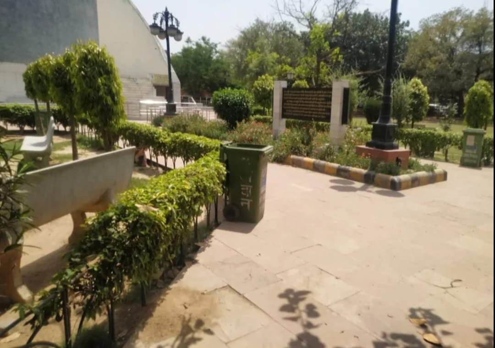
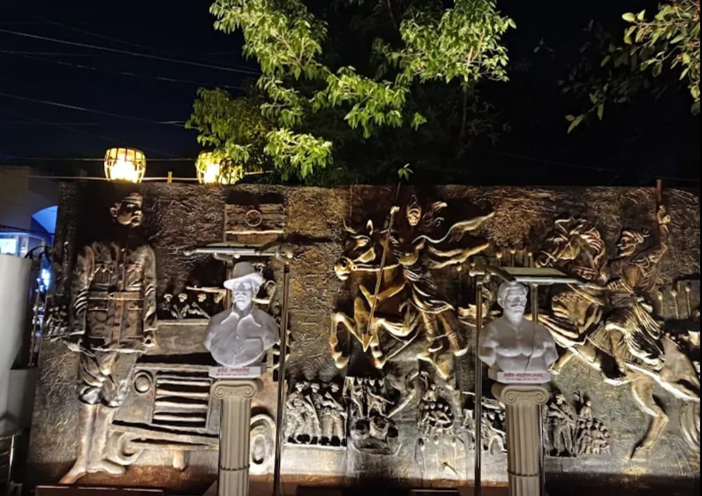
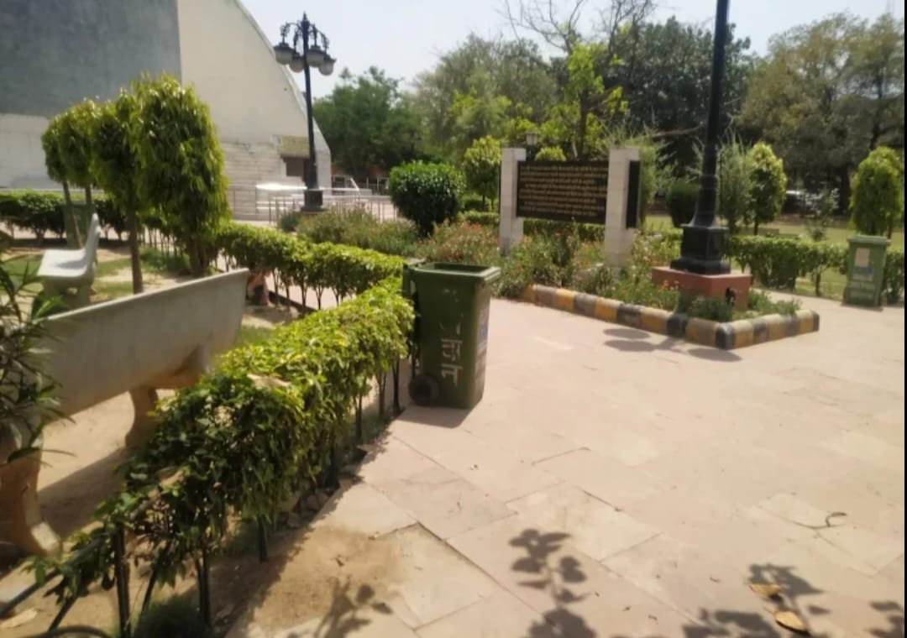
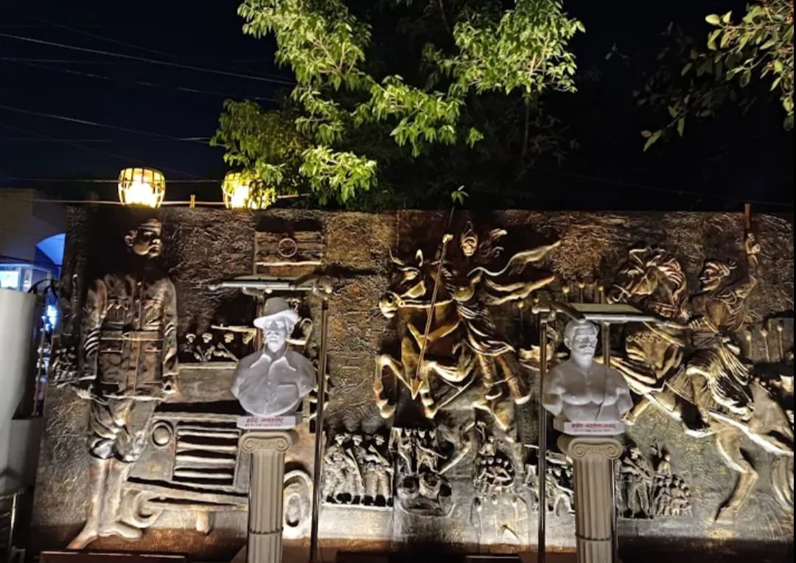

History
Shaheed Smarak Park in Agra is a memorial park dedicated to the martyrs who sacrificed their lives for India’s freedom. It serves as a place of remembrance, patriotism, and public gatherings, reflecting the nation’s respect for its freedom fighters.
- Purpose: Tribute to Indian freedom fighters
- Significance: Symbol of sacrifice and patriotism
- Managed by: Local civic authorities
- Location: Heart of Agra city
What to Explore?
- Martyrs’ Memorial: Central structure honoring freedom fighters.
- Open Grounds: Used for national events and gatherings.
- Green Lawns: Peaceful walking and relaxation space.
- Patriotic Atmosphere: Ideal for educational visits.
- Public Events: National celebrations and ceremonies.
Tips for Visitors
- Best visited in the morning or evening.
- Maintain silence near the memorial.
- Ideal for school and educational tours.
 


